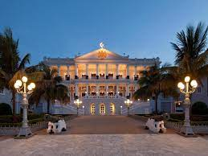

Hydrabad Palaces
1. Chowmahalla palaces:
Once the seat of the Asaf Jahi dynasty, the Chowmahalla Palace was built in Hyderabad between the years 1857 and 1869. In essence, Chowmahalla can be literally translated to mean 'Four Palaces'. The magnificent monument consists of two massive courtyards as well as a grand dining hall known as 'Khilawat'.
2. Taj Falaknuma Palace:

Taj Falaknuma Palace in Hyderabad is perched around 2000 metres above the city. Once the royal residence of Nizam- probably the richest man in the world, the palace has now been converted into a five star luxury heritage hotel. Reverberating with sheer opulence and elegance, the palace treats all its guests like royalty.
3. Malwala Palace:

Malwala Palace is an 18th century historical monument located on the Moghalpura, Hyderabad. The ancient structure boasts of Rajput and Mughal architectural styles and has special imported teak wood furniture.